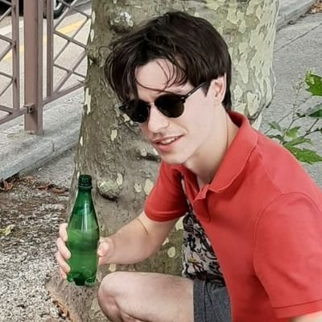

<link rel="icon" type="image/ico" href="assets/wave.png" />
<meta charset="UTF-8">
<meta name="viewport" content="width=device-width, initial-scale=1">
<link rel="stylesheet" href="https://www.w3schools.com/w3css/4/w3.css">
<bodclass="w3-content" style="max-width:1300px">
<div class="w3-white w3-container" style="height:700px">
    <div class="w3-padding-64 w3-center">
      <div class="w3-center-align w3-padding-small">
          
              <h2 style="font-family: 'Cutive Mono', monospace;">Ciaran Bench</h2>
        </div>
        <div class="w3-left-align w3-padding-small">
            
        <p style="font-family: 'Cutive Mono', monospace; margin-top: 1%; margin-left: 2%; text-indent: 15px"> I am a neuroengineering postdoc at <a href="https://www.ucl.ac.uk/ear/ucl-ear-institute">University College London's Ear Institute</a> using deep learning to improve the efficacy of hearing aids. Broadly, I am interested in compelling applications of deep learning in biomedical engineering research.</p>

        <p style="font-family: 'Cutive Mono', monospace; margin-left: 2%; text-indent: 15px"> Previously (2022) I was a postdoc in the Department of Physics <a href="http://emps.exeter.ac.uk/physics-astronomy/research/biomedical/research-interests/biomedicalspectroscopyandimaging/">University of Exeter</a> where I used deep learning to facilitate the analysis of biomedical Infrared/THz hyperspectral images.</p>
        
        <p style="font-family: 'Cutive Mono', monospace; margin-left: 2%; margin-top: 1%"> From (2018-2022) I was a PhD student in the Department of Medical Physics <a href="http://www.medphys.ucl.ac.uk/research/mle/">University College London</a> where I investigated learned approaches to solving non-linear inverse problems in photoacoustic imaging - in particular, the problem of quantifying haemoglobin concentrations from reconstructed image data (quantitative photoacoustic tomography)</a>. </p>
        
        <p style="font-family: 'Cutive Mono', monospace; margin-left: 2%; margin-top: 1%">
        Concurrently (Sep-Dec 2019), I undertook a placement as a consultant data scientist at <a href="https://mediwise.co.uk">
          MediWise</a> where I constructed ML models to facilitate non-invasive measurements of blood glucose concentrations.
            </p>
       <p style="font-family: 'Cutive Mono', monospace; margin-left: 2%; margin-top: 1%"> I also dabble in algorithmic sports betting and have deployed an AI-driven <a href="http://ufc-fight-predictor.com/">web application for UFC fight prediction</a> (developed the full stack). Aside from this, I occasionally compete in competitive e-sports events (Super Smash Bros. Ultimate).
       </p>
       <span style="background-color: #FFFF00">

      </div>
    </div>
  </div>
